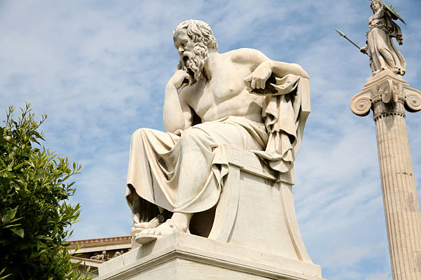

Ciencias Sociales • Filosofía • Economía
“El hombre está condenado a ser libre.”
— Jean-Paul SartreEste blog ha sido creado como un espacio de aprendizaje y reflexión para los estudiantes de Ciencias Sociales, Filosofía y ciencias Económicas y políticas. Aquí encontrarás material, actividades y pensamientos de grandes filósofos que han marcado la historia del pensamiento humano.
La filosofía nos invita a cuestionar, reflexionar y comprender mejor el mundo que nos rodea. Este sitio busca acompañar los procesos académicos de los grados noveno, décimo y once, ofreciendo recursos, reflexiones y material de apoyo para fortalecer el pensamiento crítico.

“La vida solo puede ser comprendida mirando hacia atrás, pero ha de ser vivida mirando hacia adelante.” — Søren Kierkegaard
“La felicidad no es un ideal de la razón, sino de la imaginación.” — Immanuel Kant
“La angustia es el vértigo de la libertad.” — Søren Kierkegaard
“Nadie educa a nadie, nadie se educa solo: los hombres se educan entre sí mediatizados por el mundo.” — Paulo Freire
“La educación no es la preparación para la vida; es la vida en sí misma.” — John Dewey
“La alegría no está en las cosas; está en nosotros.” — Richard Wagner
“Quien tiene un porqué para vivir puede soportar casi cualquier cómo.” — Friedrich Nietzsche
“No se trata de buscarle un sentido a la vida en abstracto, sino de responder responsablemente a lo que la vida espera de nosotros.” — Viktor Frankl
“Educar es depositar en cada hombre toda la obra humana que le ha antecedido.” — José Martí